What was this business?
The platform was used internally by insurance advisors managing relationships with large corporate clients. Every client profile contained years of policy information, relationship history, meeting notes, and ongoing activities. As the product evolved, key workflows became increasingly difficult to use, slowing down everyday operations.
The Problem
Insurance advisors depended on this platform throughout the day, so replacing existing workflows wasn't an option. The redesign had to improve speed and clarity without forcing teams to relearn the software they already relied on.
Outcome
The redesign gave advisors faster access to client information, transformed meeting documentation from a manual process into an AI assisted workflow, and simplified task management without disrupting existing ways of working.
Finding the Right Direction
I explored multiple layout directions before committing to the final interface. These iterations helped validate the information hierarchy before the visual language was applied across the rest of the workflow.
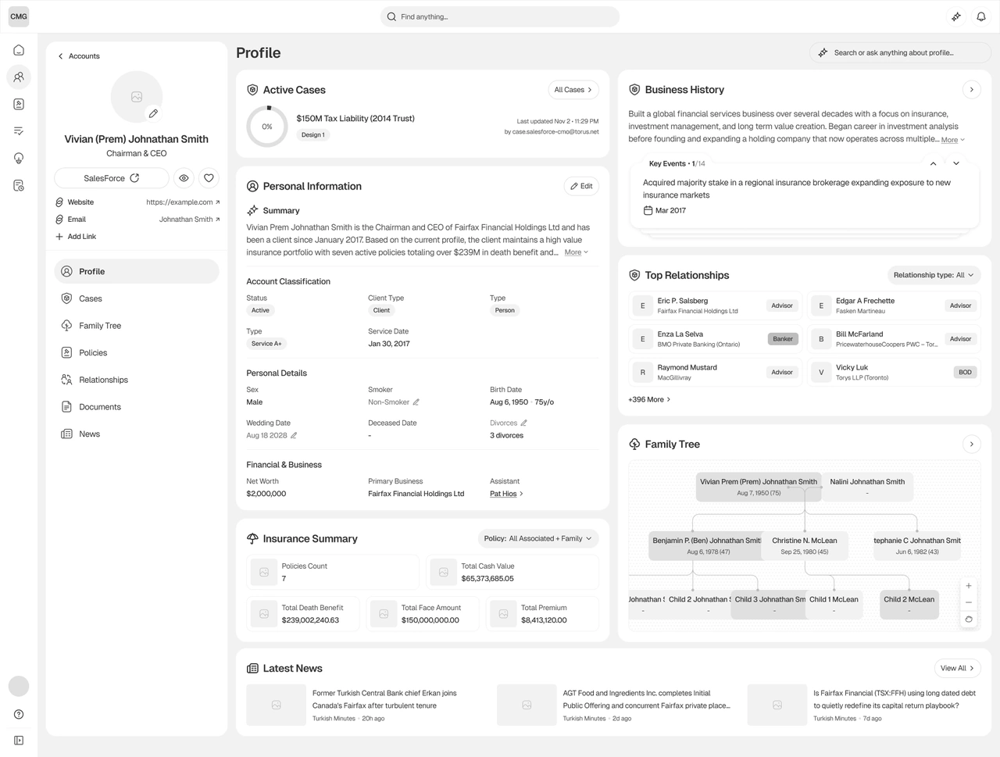
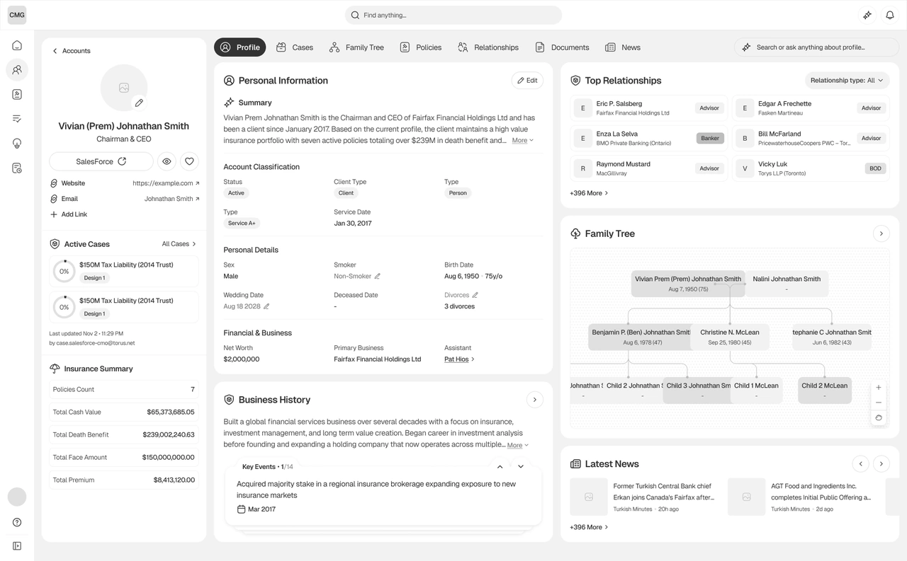
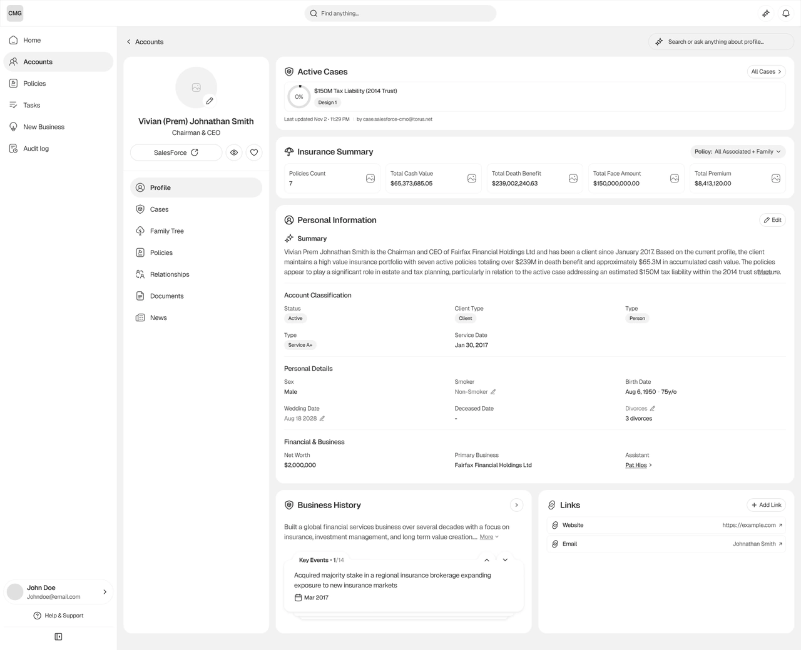
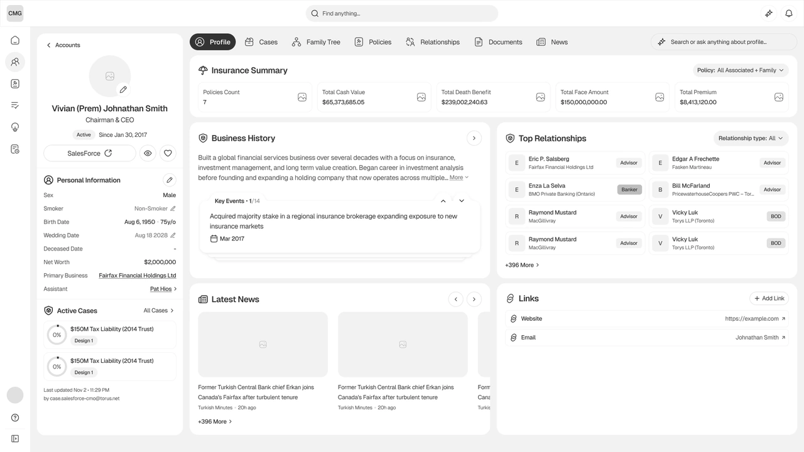
Early explorations based on stakeholder's requirements
Reworking the Client Profile
The client profile was the heart of the platform. It combined personal details, policy information, relationships, notes, and activity history into a single workspace. Rather than reducing information, I reorganized it around how advisors prepared for client meetings, making frequently referenced information easier to scan while keeping supporting details close by.


Client account showing profile and service sub tabs
Modernizing Meeting Documentation
Meeting notes were previously created through manual transcription after every client conversation. The redesign introduced an AI assisted workflow that generated transcripts and structured summaries, allowing advisors to review and refine the output before attaching it to the client's record.
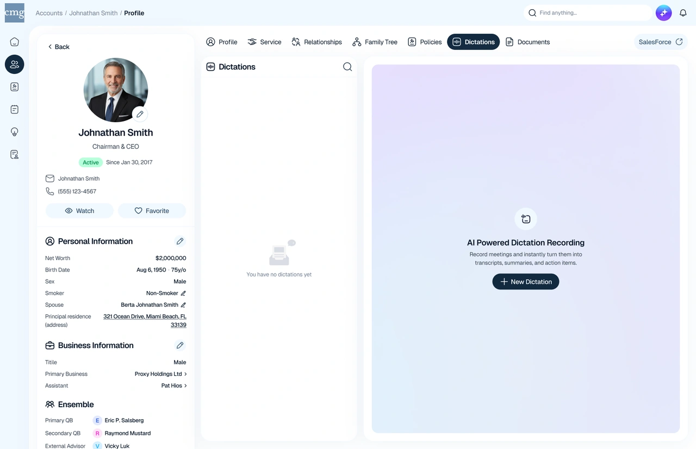
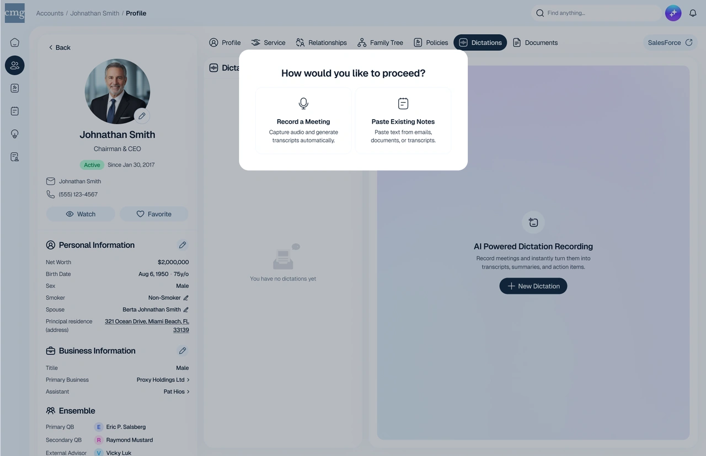
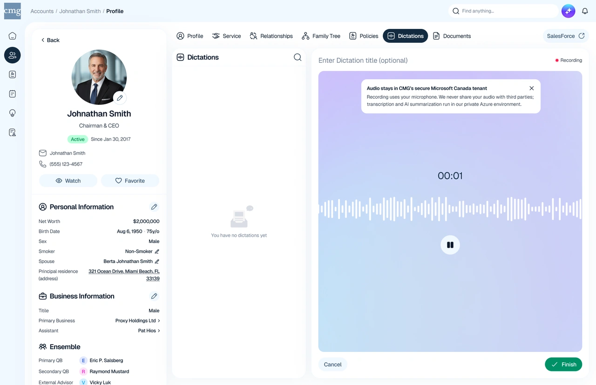
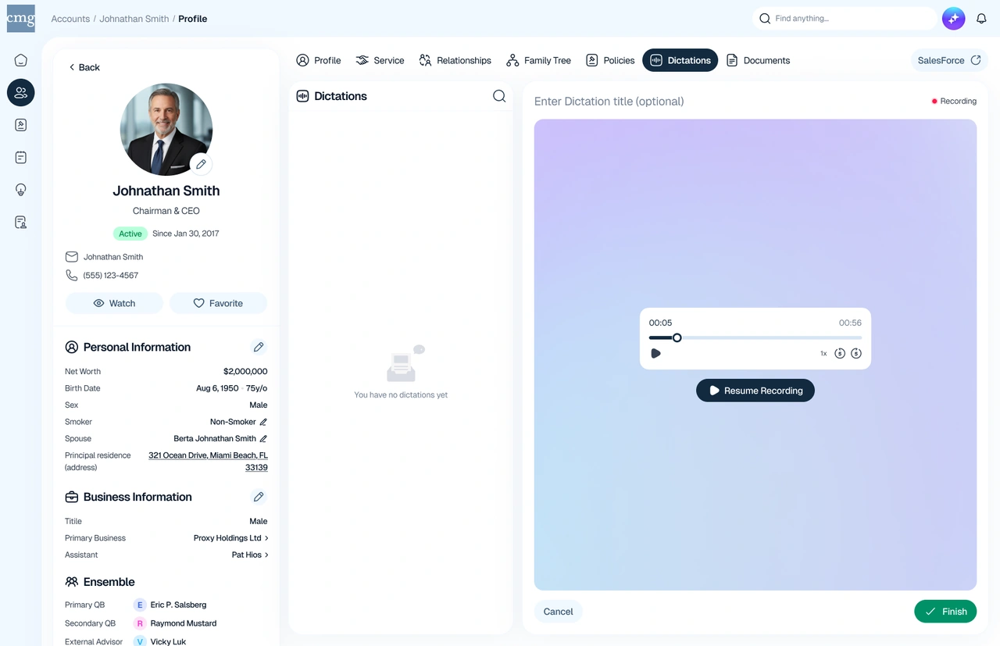
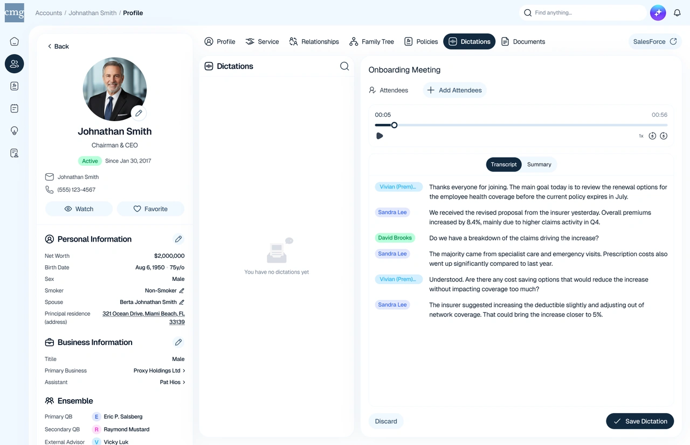
User flow for recording the first dictation
Simplifying Task Management
Tasks supported follow up activities tied directly to client relationships. Rather than building a complex project management tool, the experience focused on creating, assigning, and tracking work with minimal friction.
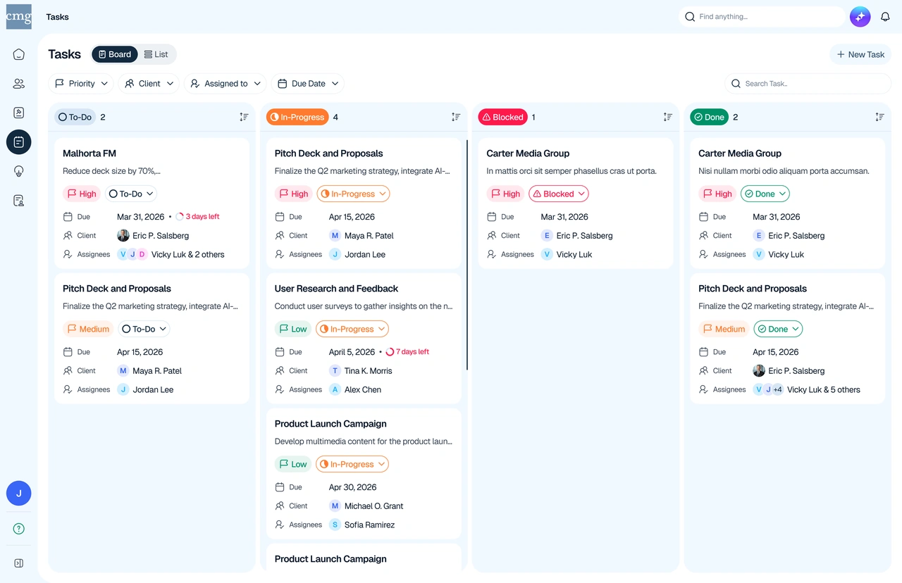
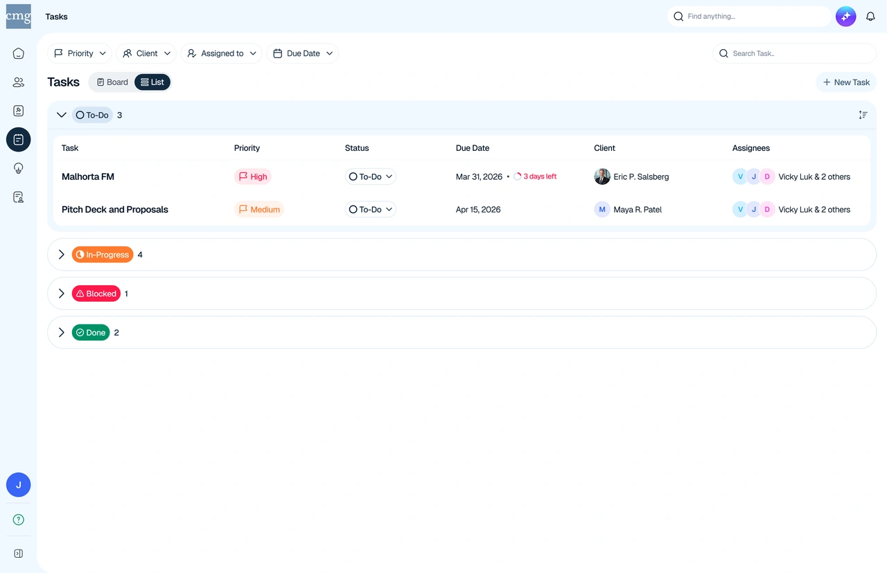
Tasks in list and board view

Creating a new task

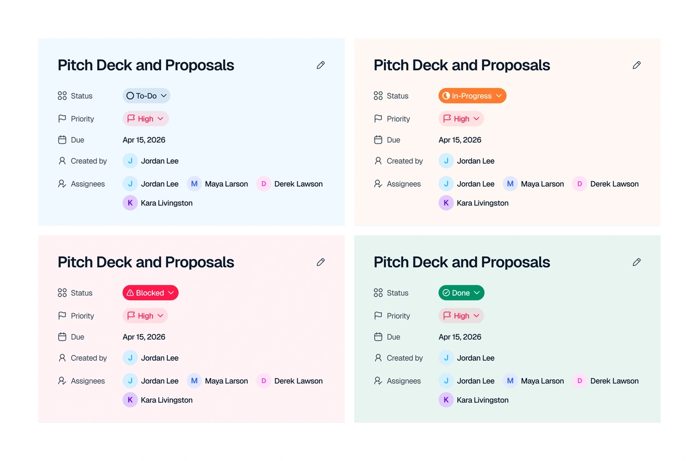
Task detail modal at different stages of the task
Design Decisions
Reorganized information hierarchy
Reduced the time spent searching through dense client records.
Explored multiple layout concepts
Validated the structure before scaling it across the product.
Introduced AI assisted dictation
Shifted meeting documentation from manual transcription to review and approval.
Kept task management lightweight
Supported everyday follow ups without introducing unnecessary complexity.
Impact
The redesign modernized the platform's most frequently used workflows without disrupting established ways of working. Advisors could review client information more efficiently, meeting documentation became significantly less manual through AI assistance, and follow up tasks were easier to manage within the context of each client relationship.